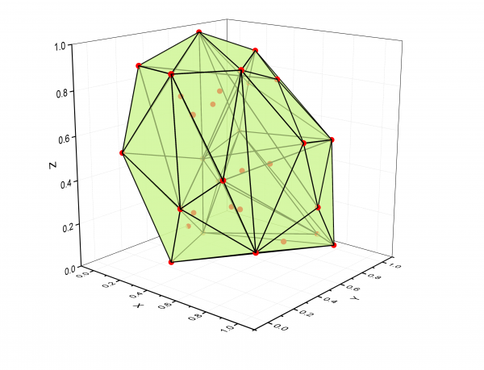
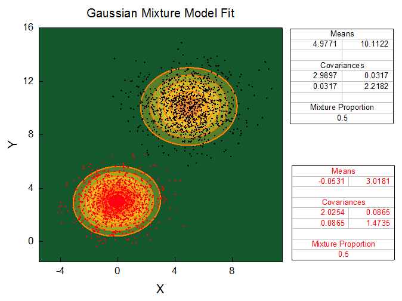

このサンプルでは、OriginのMATLAB コマンドからMatlab関数imfindcircles()を呼び出して、TEM画像を分析して、半径分布データを求めます。MATLABの結果を得た後、MATLABインポートツールを使って、データをOriginのワークシートに送ります。分布曲線で表した粒子半径のヒストグラムは、以下のグラフのように示されます。また、「列の統計」を実行して、「平均」と「標準偏差」を求め、グラフの式に挿入します。
このサンプルでは、ランダムなX,Y,Z地点を生成します。OriginのMABLAB コンソールから3Dデータ用のMATLAB関数convhull()を呼び出して、凸多角形のポイントを計算します。結果として、凸多角形データをOriginのワークシートにインポートして、この情報を使って、すべてのデータを含む三角曲面を作成します。

このサンプルでは、2つのポーク領域を含むデータ（黒と赤の散布図）を用意します。このデータをフィットさせるには、まず、MATLAB関数cluster() を呼び出して、2つのピーク領域を2グループにクラスター化します。（クラスター情報のデータセットは、Originにインポートされ、カラーデータとして使われます。）次に、 fitgmdist()関数を使って複合ガウスモデルフィットを実行し、フィットパラメータから等高線図を作成します。また、等高線図をカスタマイズしてフィット結果を表示します。
